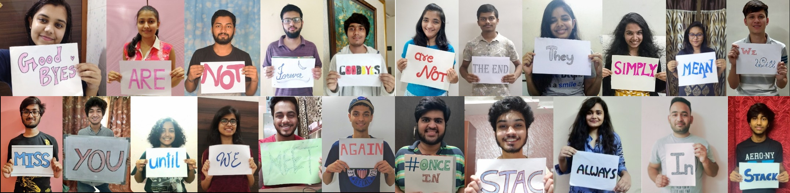
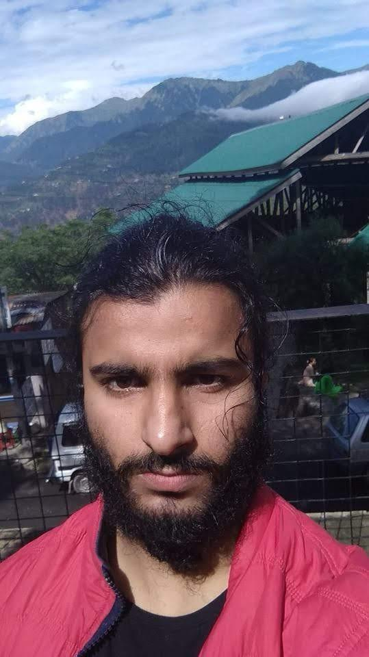

The batch of 2020
People who made STAC a better place!
A Message From STAC...

Few Words For Gems Of STAC-IIT Mandi
For the person who nurtured the club when it was a small bundle of some curious students and established it as a close-knit community that has been growing larger as everyday passes, a
simple ‘thank you’ will never be able to express our gratitude for all the things you have done for STAC. You have been there for us not just as a helpful senior or caring mentor but
also as our true friend and well-wisher. We have learnt a lot from you and we know wherever you go, you will be genuinely happy whenever any of us will achieve something and will always
be the person we can share our problems with. We look back to the day when you introduced this amazing club to us and cherish all the beautiful memories we have spent with you, be it the
night outs, the fun telescope sessions, the exciting competitions, the canteen treats, the late night movies, the fun trips and parties and many more such memories that will always bring
a smile on our faces. You are a gem of a person and will always be a source of motivation and inspiration for us. The club is indebted to you for your dedication and hard work forever
and we look forward to the day we’ll meet again, talk our hearts out and laugh at all the lame jokes we can think of, not to forget your iconic dance moves! Wish you good luck in all
your future endeavours, Shreyas. Keep making us proud with all your achievements!
Until we meet again! :)
Bakraaaaa!
We're fortunate to say that you were one of the people who were fundamental in shaping STAC and the family in the way it is today. All of the unseen hard work that you put
in, led the club from a handful of students to one of the most prominent student communities in Mandi (all the while also handling Darsheel Safari as your co-coordi- kaise kar liya??
xD)
All jokes aside, you're truly someone we look up to. You've always been there for the club whenever we needed you despite all your other responsibilities. With your wit, humour
and humility, you're also one of the coolest seniors to hang out with. So it's no surprise that many of our fondest memories of STAC are with you, from telescope sessions and laser
pointers to singing and astrophotography at Diana Park. We hope we all get to meet again soon and make some more memories.
Thank you for everything you've done for the club, and the
values that you've taught us with everything you've accomplished. I (along with many others I'm sure) aspire to someday have a signature photo pose as iconic as yours xD
Wish you the
best of luck for the future! Aur yaad rakhna, aapki party abhi bhi pending hai!
“How lucky we are to have known you all that makes saying goodbye so hard.” Thanks a lot, Navneet for all those amazing photographs during the trips and the parties. You are among the
seniors upon which we can rely for almost anything. You have amazing skills and you will always be the person we look upto for that. Your passion about the things you are interested in,
inspires us to do great things in life. We feel really sad that we could not give you the farewell you deserved but, we will miss you and always cherish the memories we have with you.
While we really admire you for your skills and talents and all that you have done for the club and the institute as well, you have also set an example of a true and caring friend. You
are that one person we can go to at any point of time when we feel low or dejected and we know that you will listen to us and stick to us through thick and thin. We hope you had a great
time at STAC, and will continue to be a part of the family and keep delighting us with awesome astrophotographs. We all wish you a great future ahead Navneet!
We all are a little emotional while writing this and bidding a farewell to amazing seniors like you. Thank you for being so helpful and guiding us through our thick and thin. We will all
miss those awe-inspiring group discussions you used to conduct, both in the STAC sessions and on whatsapp group. As expressed in your conversations, your perceptions say how amazing your
outlook on life is.
A hard working person as you are, you inspire all of us. Astonished by your knowledge in every field, whether it’s photography, astronomy or academics, etc, we all look to you as our
mentor. Your enthusiastic attitude inspires all of us to live fully and happily. From now on, we may not be in constant touch but we all have a special place in our hearts for you. As
you enter a new phase of your life, we wish you loads of success, and good wishes to live your dreams each and every moment.
With a heavy heart , we are writing to bid a good bye to one of the best persons STAC could have. Surely, you are not going out of our family, you are just waving off from its eyes. STAC
carries your soul, mind and dedication that you gave to this club, the way you cherished the club with those physics brainstorming sessions, when the 'Einstein of IIT Mandi' used
to teach us the lessons of relativity, the one who made physics phenomenally explorable. Looking back at all the interactions we had with you, it only fills our hearts with pleasure and
happiness that we got a chance to be a part of the club that has amazing seniors like you. You will always be a person we all will look up to and be proud of. We admire you for your
dedication, sweetness and humility. Your hard work and dedication is clearly reflected in the interesting STAC sessions that you have taken when you tirelessly explained us things in
great detail so we could understand. We still remember the times when you would put all your thoughts on the board to make us relate with the different concepts of physics and astronomy
and clarify all our doubts no matter how much time it would take. At the same time, we cannot deny the fact that you are utterly humorous in a very unique way which we love about you. We
feel really sad that we could not give you the farewell you deserved but, we will miss you and always cherish the memories we have with you. We hope you had a great time at STAC, and
will continue to be a part of the fam. Wishing you joy and happiness as you begin a new chapter in your life!
There are some people who walk into your life and leave a big impact on you with their positivity and wisdom. You look up to them and admire them for who they are and luckily, for us,
you have been one of such people. Thank you, Shishir, for being with STAC since the very beginning. You are hands down one of the coolest seniors we ever had. Hanging out with you was an
absolute pleasure. Your tenacity to participate and lead in so many clubs was admirable, something we all wished we could do too. You are one of the most genuine, fun and caring persons
we ever had the chance to meet. You have been a very chilled out and approachable person and a good friend to all. We remember how your name would always be there among the quiz winners
and all the discussions we used to have with you. You were also one of the first people to write a blog for STAC. It is still read by us and has been setting a great example for fellow
writers. Your extraordinary knowledge won many competitions and many hearts and you have been a constant role model and aspiration to all.
We hope we can stay in touch in the future
as well. Wish you good luck in all your future endeavors.

Gagan Deep Singh Arora
Looking back at all the interactions we had with you, it only fills our hearts with pleasure and happiness that we got a chance to be a part of the club that has amazing seniors like
you. You will always be a person we all will look up to and be proud of. We admire you for your dedication, sweetness and humility. Your hard work and dedication is clearly reflected in
the interesting STAC sessions that you have taken when you tirelessly explained us things in great detail so we could understand. We still remember the times when you would put all your
thoughts on the board to make us relate with the different concepts of physics and astronomy and clarify all our doubts no matter how much time it would take. At the same time, we cannot
deny the fact that you are utterly humorous in a very unique way which we love about you. We feel really sad that we could not give you the farewell you deserved but, we will miss you
and always cherish the memories we have with you. We hope you had a great time at STAC, and will continue to be a part of the fam. We all wish you a great future ahead Gagandeep!
Hanging out with you is absolute fun. You contributed to establishing a culture of technical blog writing in STAC. The way you put down your views on multitudes of ideas is just amazing.
Be it physics, philosophy or even the memes.
Your blog was the first one to be posted on our medium, and now we have 8 blogs on our own blog site which shall keep growing.
We really admire you and your CTF skills! Such a pure-hearted soul you are. We wish we could have spent more time with awesome guys like you in college.
Just stay in touch with us in the upcoming time! All the best for your future ventures.
We were introduced to you right from your First year. Your engagement and your love for physics is very inspiring. We all appreciate you for the efforts that you have put in. You would
come from the south campus to North even for a meeting of 30 minutes and that too late at night. We will always admire you for your humility and sweetness. Whenever we would meet you,
you always greeted us with a warm smile that would leave an impact. To describe you I would say, you are our linking bridge between both the campuses and people whom we couldn't reach
easily. You always had the sense of sharing knowledge with you. And we all got benefited by that as a community. With all those interactions that we had, we are honoured to have you as
our senior. Thank you so much for sharing knowledge with us, spending time with us and giving us a golden opportunity to know how pure a soul you are. Just be the same as you are now!!!